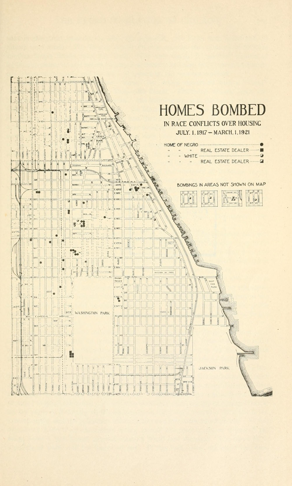

2
Exclusion Becomes Policy
1908–1948
"like a marvelous delicately woven chain of armor"
THE HYDE PARK HERALD, 1928, PRAISING THE COVENANTS AROUND THE NEIGHBORHOOD
As pressure grew to keep the
neighborhood "exclusive," so did the tools. Exclusion stopped being
only a belief. It became written policy.
1908
The Hyde Park Improvement Protective Club forms, 350 members pledged to hold the color line.
1917
The Chicago Real Estate Board adopts a block-by-block segregation plan.
1917–21
White Chicagoans set off 58 bombs at Black homes and at agents who sold to Black families. No one is convicted.
1924
The National Association of Real Estate Boards adopts Article 34.
1927
A model racial covenant is drafted and promoted block by block throughout Chicago.
1937
Carl Hansberry buys a home. Neighbors sue him under a covenant.
1948
In Shelley v. Kraemer the U.S. Supreme Court rules racial covenants unenforceable.
The rule in writing · Article 34, 1924
Realtors made the color line a professional duty.
Selling to the "wrong" buyer could cost an agent their career, and
the rule was enforced from 310 South Michigan Avenue, seven miles
from these blocks.
ARTICLE 34.
"A Realtor should never be instrumental in introducing into a
neighborhood a character of property or occupancy, members of any
race or nationality, or any individuals whose presence will
clearly be detrimental to property values in that neighborhood."
National Association of Real Estate Boards,
Code of Ethics, adopted June 6, 1924
The money followed
the rule. The University of Chicago spent $83,597.46 defending
racial covenants in court between 1933 and 1947.
A covenant in its own words
"No part of said premises shall in any manner be used or occupied
directly or indirectly by any negro or negroes," excepting
janitors, chauffeurs, and house servants.
Model racial covenant drafted for the
association by Nathan William MacChesney, 1927
Hundreds of Cook County
subdivisions carried language like this by the 1940s. The promise
bound every later owner of the property.
A family's fight

PHOTOGRAPH BY LEGIMET, 2025 · CC BY-SA 4.0
Carl Hansberry's 1937
purchase at 6140 South Rhodes became Hansberry v. Lee (1940), and
the family won. His daughter Lorraine, seven when a chunk of
concrete came through the window, later used that experience in A
Raisin in the Sun.
Mapped by the riot commission

Homes bombed in race
conflicts over housing, July 1, 1917 to March 1, 1921.
THE NEGRO IN CHICAGO, 1922 · PUBLIC DOMAIN
58bombings of
Black homes
Black homes
0convictions
"I will
not run. The race is at stake and not myself."
Jesse Binga · banker, bombed repeatedly, 1920
The wall held even for a professor
In 1942 the university gave William Allison Davis
tenure, the first for a Black scholar at a major white university.
No landlord in Hyde Park or Kenwood would rent to his family, so
he commuted from across the color line his own employer had helped
defend in court.
How it worked
COVENANTS
written into deeds
→
NEIGHBORS + REALTORS
enforce the rules
→
COURTS
uphold the system, 1926 to 1948
Exclusion was written down, enforced, and funded by institutions.
It wasn't accidental. It was organized.
ROOTED
FORWARD
FORWARD
rooted-forward.org